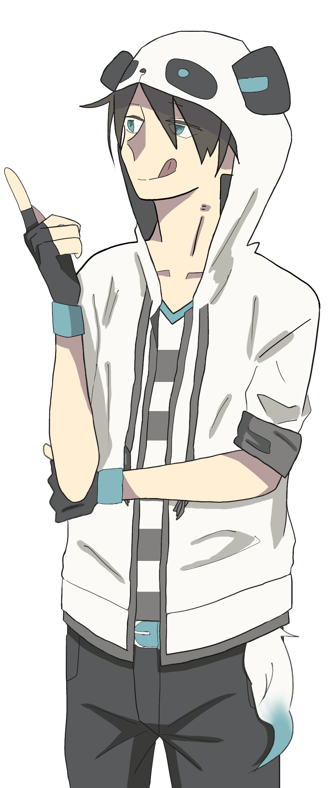
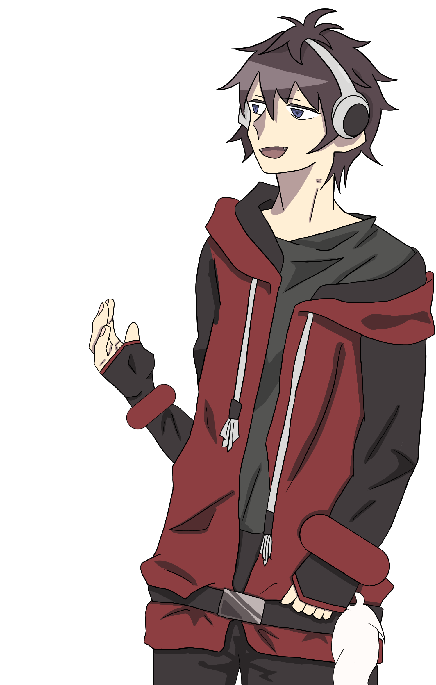
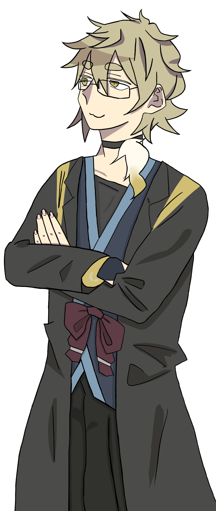
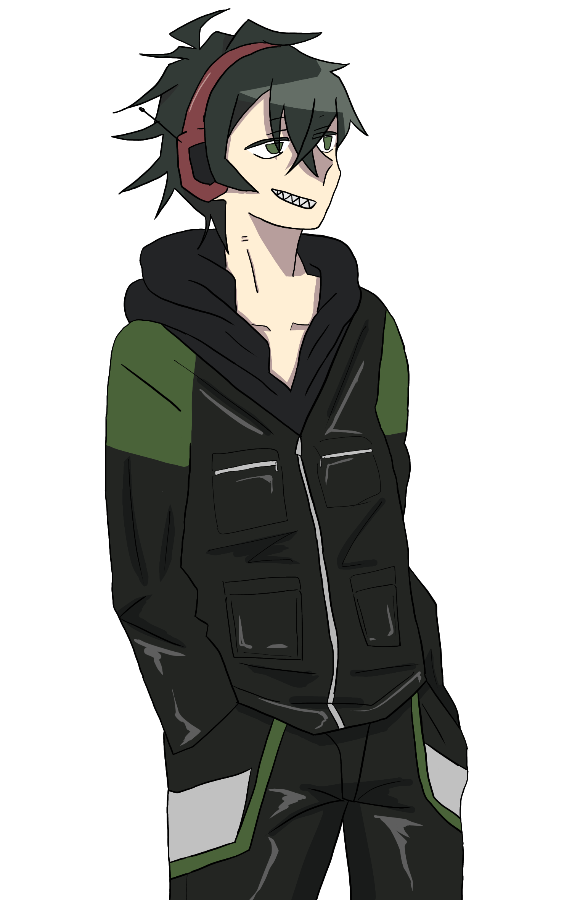

member
news
goods
MEMBER
White Tailsとは
White Tailsとはゲーム実況動画を中心に活動する性別不詳の6人グループの名称である。 活動の中心はYoutubeであるが、ラジオ配信や自ら本を出版するなど様々なメディアで活躍している。
中国の動画サイトなどにもアカウントを作成し、世界的な活動が期待されている。
メンバーはそれぞれ個性豊かで、動画内でも数々の 迷言を生み出している。
メンバーについて詳しく見る



